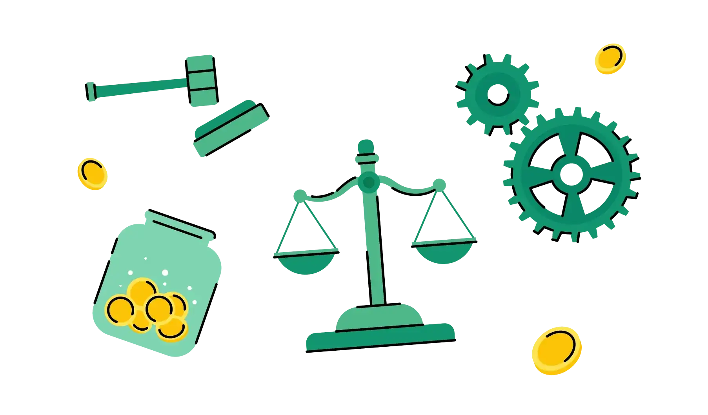

📜Материальная культура
- Орудия труда и инструменты (сельскохозяйственный инвентарь, станки, механизмы).
- Жилища и сооружения (дома, заводы, фабрики, государственные учреждения, магазины).
- Предметы быта (мебель, одежда, обувь, бытовая техника).
- Транспорт и дороги (автомобили, поезда, самолёты, а также пути их перемещения).
- Средства связи (телефоны, радио, интернет).
- Культурные растения и домашние животные, которые были созданы или приобретены определённой культурой.
- Технологии производства — накопленные знания и умения, связанные с созданием различных продуктов.
Материальная культура — это совокупность предметов, устройств, сооружений, то есть искусственно сотворённый человеком предметный мир. Она включает в себя всё, что создано человеком для удовлетворения своих потребностей и адаптации к окружающему миру.

Узнай больше